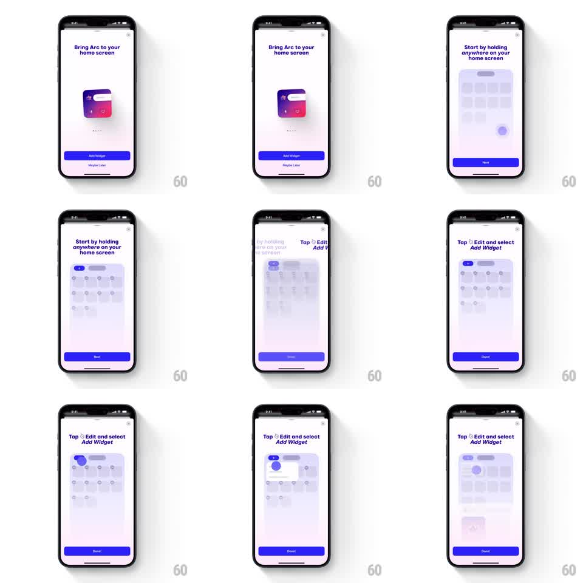

Media
Frame-by-frame

Rebuild this animation 1:1: Arc Search's add-widget tutorial - a step-by-step demo where a stylized home screen dims, a finger spot holds on it, icons enter edit mode, and the Edit / Add Widget path is highlighted beat by beat.

Rebuild this animation 1:1: Arc Search's add-widget tutorial - a step-by-step demo where a stylized home screen dims, a finger spot holds on it, icons enter edit mode, and the Edit / Add Widget path is highlighted beat by beat. ## Integration Integration: stack-agnostic spec - springs given as stiffness/damping, timed motions as duration + curve; map every value to your framework and animation library of choice. ## Scene A white tutorial card: "Bring Arc to your home screen" with the Arc widget preview, an "Add Widget" button and "Maybe Later". Steps play on a mock home screen (dimmed app grid): step 1 "Start by holding anywhere on your home screen" with a touch ripple; step 2 "Tap Edit and select Add Widget" with the Edit pill highlighted and a popover appearing; a "Next"/"Done" button advances. ## Motion spec Pattern: guided tutorial beats on a mock home screen, ~2s per step. - The mock home screen fades in dimmed (300ms); a touch spot appears and holds, its ripple expanding (600ms loop, twice). - The grid icons pop into edit mode: each grows a minus badge (spring stiffness 400 damping 18, 40ms stagger across the grid) and the set begins a subtle wiggle (plus/minus 1.5 degrees, alternating per icon, 280ms loop). - The Edit pill highlights with a glow pulse (600ms), then a popover menu rises from it (250ms, ease-out) with "Add Widget" highlighted. - The instruction text crossfades between steps (250ms); the step dots advance. - On Done, the mock fades out back to the intro card (300ms). ## Calibration - The wiggle is gentle and desynchronized per icon - a demo of jiggle mode, not a storm. - Every highlight animates to its target: ripple where the hold happens, glow on the exact Edit control. ## Reduced motion Steps fade between static states. ## Don't miss - The home screen mock is blurred and dimmed - a stage, not a real springboard. - The minus badges appear on every icon at once with a fast ripple-order stagger.